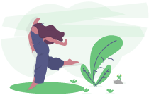

<ion-app>
  <ion-menu contentId="main" menuId="main-menu" side="start" type="overlay" style="background-color: #F4F5FA;">
    <!-- <ion-header>
      <ion-toolbar>
        <ion-title>Awesome avocado menu</ion-title>
      </ion-toolbar>
    </ion-header> -->
    <ion-content class="active">
      <div class="menu-hearder-bg"></div>
      <div class="hearder-content">
        
        <ion-label>
          <!-- <h1>{{(_user | async)?.fullname}}</h1>
          <p>{{(_user | async)?.role}}</p> -->
          <h1>{{currentUser?.fullname}}</h1>
          <p>{{currentUser?.role}}</p>
        </ion-label>
      </div>
      <div *ngIf="!isPro" class="action-button">
        <ion-button routerLink="/new-request">
          <ion-icon slot="start" name="add"></ion-icon> New Request
        </ion-button>
      </div>

      <ion-list class="menu-items" lines="none">
        <ion-menu-toggle *ngIf="currentUser?.role === 'user'">
          <ion-item routerLink="/home" routerLinkActive="selected" routerDirection="root">
            <ion-icon name="today-outline"></ion-icon> Home
          </ion-item>
        </ion-menu-toggle>
        <ion-menu-toggle *ngIf="currentUser?.role === 'pro'">
          <ion-item routerLink="/home-pro" routerLinkActive="selected" routerDirection="root">
            <ion-icon name="today-outline"></ion-icon> Home
          </ion-item>
        </ion-menu-toggle>

        <ion-menu-toggle>
          <ion-item routerLink="/post" routerLinkActive="selected" routerDirection="root">
            <ion-icon name="browsers-outline"></ion-icon> Posts
          </ion-item>
        </ion-menu-toggle>
        <!-- <ion-item class="active">
          <ion-icon name="pie-chart-outline"></ion-icon> Live sessions
        </ion-item> -->

        <ion-menu-toggle>
          <ion-item routerLink="/chat" routerLinkActive="selected" routerDirection="root">
            <ion-icon name="chatbubble-ellipses-outline"></ion-icon> Messages
          </ion-item>
        </ion-menu-toggle>

        <ion-menu-toggle>
          <ion-item routerLink="/about" routerLinkActive="selected" routerDirection="root">
            <ion-icon name="earth-outline"></ion-icon> About EcoCyc
          </ion-item>
        </ion-menu-toggle>

        <ion-menu-toggle>
          <ion-item (click)="logout()">
            <ion-icon name="exit-outline"></ion-icon> Sign Out
          </ion-item>
        </ion-menu-toggle>
      </ion-list>
    </ion-content>
  </ion-menu>
  <ion-router-outlet id="main"></ion-router-outlet>
</ion-app>
